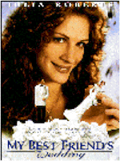
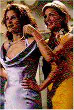
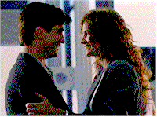
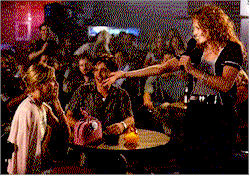

Contents | Features | Reviews | News | Archives | Store |
 |
|
| Movie Credits | Buy It! |
My Best Friend's Wedding
Review by Carrie
Gorringe
Posted 20 June 1997
|  | Directed by P.J. Hogan Starring Julia Roberts, Dermot Mulroney,
Screenplay by Ronald Bass |
Noted food critic Julianne Potter, (Roberts), "Jules" to her friends, is about to experience first hand the horrible truth to the homily about being very careful for what you ask, because you just might receive it. Her former lover and now best friend, Michael O’Neal (Mulroney) is about to get married. "Best Friends", however, does not even begin to describe the relationship between Michael and Jules; after one "hot month" in college, as Jules describes it, she and Michael decided to be friends instead. This friendship transcended the usual guilt-ridden, uncomfortable moments between two ex-lovers who decide upon so-called friendship as an excuse to avoid hurt pride on either side of the fence. These two really are the best of friends – true confidantes and advisers with a level of mutual trust and affection that is enviable, to say the least, if a touch obsessive. During the nine years of their friendship, Michael had always carried a bit of a torch for Jules, to the point where, the year earlier, he had obliged her to vow that the two of them would marry if neither one was married by the age of twenty-eight. Jules is down to three weeks before her deadline when Michael pops the question – to someone else. That someone is Kimmy, (Diaz), a sweet student of architecture from an indecently wealthy family. She embraces Jules from the first as a sister. But Jules, learning too late that she really does love Michael, detects enough weaknesses in Kimmy and Michael’s relationship to make covert sabotage a reality. All sorts of madcap situations ensue, even to the point of recruiting Jules’ gay editor, George (Everett), to pose as her fiancé, a disguise that he pulls off so brilliantly that Michael begins to get jealous.
The audience for My Best Friend’s Wedding, as evinced above, will find themselves firmly in the ‘30s screwball realm of It Happened One Night. There are a few departures from the basic formula, one of them being a heroine who is rushing toward matrimony from the start rather than fleeing from it (indeed, so prevalent was this premise that one of the best books on this romantic comedy genre is entitled The Runaway Bride). Screenwriter Bass, who won an Oscar for the screenplay of Rain Man, has provided audiences with the best justification in recent memory for resurrecting the screwball comedy. Bass is on firmer ground with this genre than the other recent entry in the genre, the dreary Addicted to Love. The difference between the two is easy to distinguish: Bass refuses to let the central obsessions between the characters -- the most delicate and critical element of this type of comedy -- descend into overt cruelty. The characters’ actions may seem nasty to outsiders, but, paradoxically, the characters must be constructed with enough likeable qualities that, by the time they commence their outrageous behavior, it is seen to be entirely normal. In contrast, Addicted to Love was completely undone by the well-over-the-borderline psychopathy of the lead heroine; as written, Maggie was too hateful to be sympathetic. Moreover, the insecurities of Broderick and Ryan’s alter egos were far too extensively ingrained to render them effective objects of identification for anyone except chronic milquetoasts or stalkers-in-training. According to Elizabeth Kendall (she of The Runaway Bride), the best screwball characters had at their very souls an irresistible mixture of self-confidence and emotional vulnerability. Michael and Jules are both successful and happy in their lives; all they need is someone to share those lives with. There is relatively little malice aforethought at work in Jules’ obsession with derailing the wedding; it has less to do with exorcising deep-seated personal demons and more to do with securing her happiness. The seemingly inexorable fact that a wedding is about to take place is, at best, a trifling concern compared with the need to assure herself of Michael’s love, a gift she now needs to rescue from her neglect.
The other precondition for screwball comedy is to have at hand a cast with an immaculate sense of timing, and Hogan chose his cast well. It is not enough to say that there are no false notes on screen; one must judge the acting here within the realm of varying degrees of excellence. Roberts and Mulroney add such sweetness to their desperate, confused feelings for each other so to make the audience believe that there is truly something valuable at stake here. Diaz, who seems to specialize in hard-boiled white trash (Feeling Minnesota) blossoms into a fine comedienne in her role as Kimmy; she transforms her role as comic foil into something far more than it could have been. The real star here, nevertheless, is Everett, whose charm and sexuality is almost tangible, to the point where those insidious, "what-a-shame-he’s-gay" thoughts cross your mind more than once. Why Jules would go for Michael’s shaggy-dog routine over George’s urbane sexiness (other than the minor sexual-orientation problem) is a mystery.
And, yet, there is a serious problem with My Best Friend’s Wedding, situated primarily in the ending. Not wanting to give too much away, I’ll reveal only that the variation on the usual state of affairs in such films is so far out in left field in this case as to be nothing less than shocking -- almost dangerously so. Fortunately, Bass carefully wrote a coda to the entire proceedings which eases the transition more or less, depending upon how much of an aficionado an audience member is of the screwball comedy. This business of the ending is not a serious issue, but it may set you back temporarily.
Despite this one potential flaw, the film redeems itself through its delirious sense of how to recombine pop-culture elements, and the soundtrack is its crowning glory. The opening credits, with their loopy take on the pop classic Wishin’ And Hopin’, made famous by Dusty Springfield (here sung, or whispered, less persuasively by Ani Defranco), and their liberal use of crane shots and geometric patterns owes as much to Busby Berkeley as to Hal David and Burt Bacharach. The soundtrack of this film, in fact, is almost a repertoire of David and Bacharach compositions, from the aforementioned Wishin’ to Do You Know The Way To San Jose and What the World Needs Now Is Love. From the sing-along conducted at the seafood restaurant -- to the tune of I Say A Little Prayer -- one might conclude that Hal David and Burt Bacharach have become the late twentieth-century’s answer to Stephen Foster. A new appreciation of the 60’s David-Bacharach standards has emerged (if an article in the July 1997 edition of The Atlantic Monthly is any indicator of current trends) as perhaps the last time in modern memory that the combination of hummable melodies with universal, if simplistic, themes enjoyed any common vogue. Hogan has made a habit of resurrecting vintage musical groups currently out of public favor; he employed the same motif in her breakthrough film, Muriel’s Wedding, introducing impressionable minds to (some might say, "corrupting with") the disco-era treacle known to lovers of platform shoes and white polyester everywhere as ABBA. Hogan does, however, have the good taste to include the Dorothy Fields-Jerome Kern classic, The Way You Look Tonight ( yet another link between this film and its genre past: a song from the 1936 Astaire-Rogers musical romantic comedy, Swing Time) and even some Rachmaninoff, in an indiscriminate, if evocative, audio mix, which is, apparently, Hogan’s trademark. The mix is indiscriminate only in selections, but never in practice; it is never used obtrusively, nor as a substitute for distracting the audience from bad writing. It is, in fact, a metaphor for Hogan’s work: simple themes handled skillfully. Throw this film a bouquet for its audacious reapplication and reinvention of the nearly-contemptibly familiar.
Contents | Features | Reviews | News | Archives | Store
Copyright © 1999 by Nitrate Productions, Inc. All Rights Reserved.